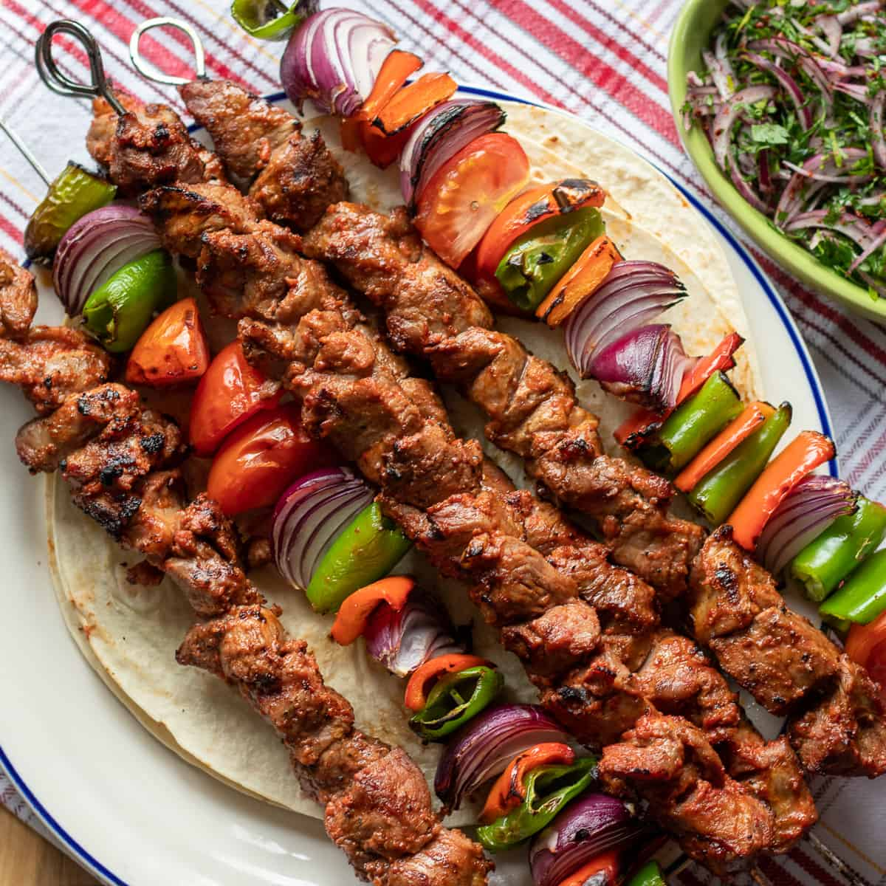

Kebab

What is Kebab?
Kebab is a Turkish dish consisting of cooked, usually grilled pieces of meat, skewered alongside
vegetables.
It is a staple dish along the Mediterranean and the Middle East, though it is mostly popular in
Turkiye.
Ingredients
Meat and Marinade
- 500g Lamb or Chicken (cubed)
- 3 tbsp olive oil
- 2 tbsp lemon juice
- 3 cloves garlic (minced)
- 1 tsp pakrika
- 1 tsp cumin
- 1 tsp dried oregano
- 1/2 tsp black pepper
- 1/2 tsp salt
- 1/2 tsp red pepper flakes (optional)
Vegetables
- 1 red bell pepper (cut into chunks)
- 1 green bell pepper (cut into chunks)
- 1 red onion (cut into chunks)
- 10 cherry tomatos
- 6-8 wooden or metal skewers
Steps to cook Shish Kebab
- Prepare the Marinade
- In a bowl, mix olive oil, lemon juice, garlic, paprika, cumin, oregano, black pepper, salt, and chilli
flakes.
- Marinate the Meat
- Add the cubed meat to the marinate and mix well to coat.
- Cover and let it marinate in the fridge for at least 2 hours (ideally overnight to get the most
flavour!)
- Prepare the Skewers
- If you're using metal skewers, make sure they are clean and ready before use!
- If using wooden skewers, make sure to soak them in water for 30 minutes to prevent burning!
- Assemble the Kebabs
- Thread the marinated meat, bell peppers, onion, and cherry tomatoes onto the skewers, alternating
ingredients for an even cook.
- Cook the kebabs
- Grill method: Preheat a grill to medium-high heat and cook for 10-15 minutes, turning occasionally,
until the meat is charred and cooked through.
- Oven method:Preheat the oven to 220 Celsius (or 430 Fahrenheit!). Place skewers on a baking tray and
bake for 15-20 minutes, turning halfway.
- Pan method: Heat a grill pan over medium-high heat, add the skewers and cook for 10-12 minutes, rotating
occasionally.
- Serve!
- Remove from heat and let them rest for a few minutes before serving.
Chef Sultans Advice
"Shish Kebab is an excellently flavourful dish, yes? Reminds me of when I'd visit my nene's house and eat with my dede. Good times, yes yes? Here's a bit of advice: I find it is best served with some rice, a pita bread, and maybe a nice refreshing salad. Afiyet olsun!"
Home